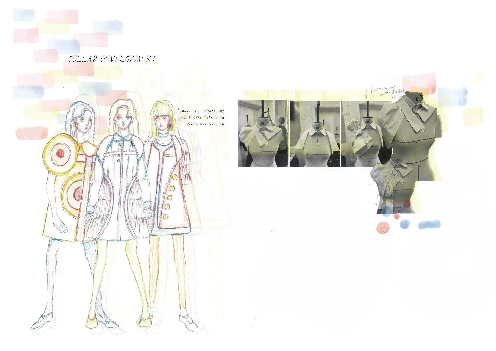
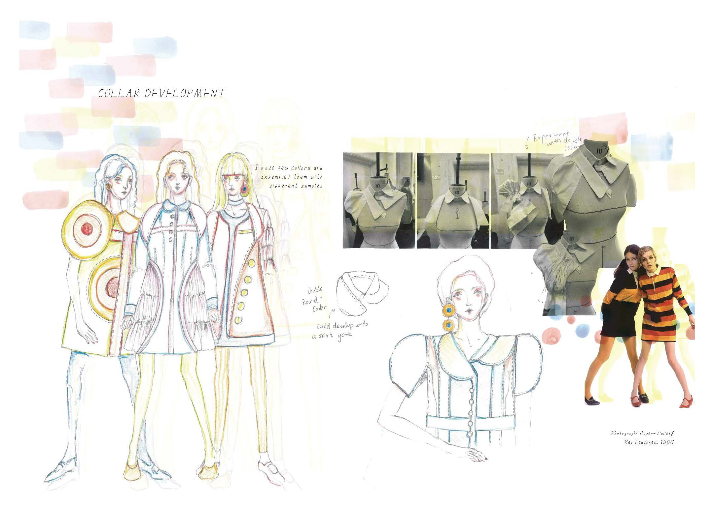
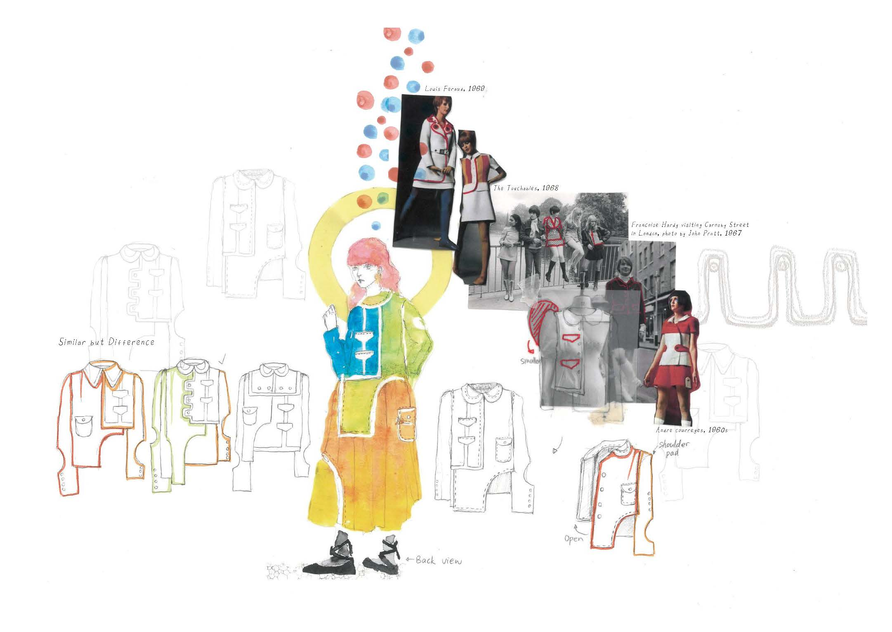
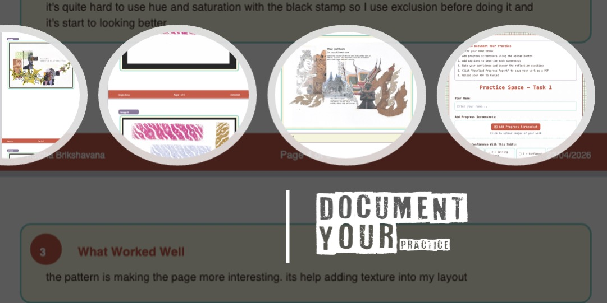

Adding Research Links & Creating Visual Flow with Graphic Elements
Workshop Structure (2.5 hours)
TASK 1 (45 mins)
Add research links with references to design page
TASK 2 (75 mins)
Apply graphic elements to create visual flow
TASK 3 (30 mins)
Document your progress & reflect
🔗
Link Research
→
📝
Reference
→
🎨
Graphic Elements
→
〰️
Visual Flow
→
📋
Document
Overview
Introduction
Task 1
45 mins
Task 2
75 mins
Task 3
30 mins
🎯 Today's Learning Objectives
By the end of this lesson, you will have:
Added research links to a design development page showing where your ideas originated
Included properly formatted references for all research imagery
Applied graphic elements (pattern brushes, stencils, or enlarged details) to create visual flow
Improved the relationship between 2D drawings and 3D work on your page
Documented your process and learning in a progress report
What Makes a Strong Design Development Page?
Design development pages show your design thinking process — how ideas evolve from research into potential outcomes. Without clear research links, the viewer cannot understand where your designs came from or why you made certain creative decisions.
✅ Essential Elements of Design Development Pages
🔗 Research Links
Show where your design ideas originated — include the research images that inspired each design direction
✏️ 2D & 3D Relationship
Show drawings alongside stand work — demonstrate how flat ideas translate into three-dimensional forms
🔍 Details & Components
Focus on specific garment parts — collars, cuffs, fastenings, seams, silhouettes
💡 Range of Ideas
Show multiple design directions — not just one outcome, but exploration and alternatives
Design Development: Before & After
❌ Missing Research Links

Student work: Loulanky Xia
The examiner cannot understand your design thinking process
✓ Clear Research Links

Student work: Loulanky Xia
The viewer can follow your creative process from inspiration to outcome
📚 Before This Lesson (Homework)
You should have already identified:
A design development page in your portfolio that is missing research links
The research images that originally inspired the designs on that page
Any drawings or stand work photographs you need to include
If you haven't done this yet: Take 5 minutes now to look through your portfolio and identify which design development page needs strengthening.
Digital Skills You'll Use
In Task 2, you'll choose one of three graphic element techniques to improve the visual flow and connections on your page. Review these options now:
〰️
Pattern Brushes
Create pattern brushes from your drawings to visually link elements and guide the viewer's eye across the page.
Pattern Brushes — best for creating flow and connecting scattered elements
Stencils & Brushes — best for bold graphic marks and textural layering
Enlarging Details — best for drawing attention to specific research elements
TASK 1: Add Research Links with References (45 minutes)
⏱️
Time Allocation: 45 Minutes
Identify research sources: 10 mins → Place research images: 20 mins → Add references: 15 mins
What You Need to Do
Add research link images to your design development page so the viewer can see where your design ideas originated. Every design direction on your page should connect back to a piece of research.
Remember: Your design development pages should show the journey from research → design idea → development. Without visible research links, this journey is invisible to the examiner.
🔗 Research Links in Action

Student work: Loulanky Xia
Research links make your design thinking visible. The viewer should be able to trace each design idea back to its research origin.
📚 Harvard Referencing Reminder
For research images:
Artist's Last Name, First Initial. (Year). Title of the work [Medium].
Examples:
van Herpen, I. (2019). Hypnosis Collection [Photograph].Chalayan, H. (2007). Mechanical Dress [Fashion design].Kusama, Y. (2016). Infinity Mirrors [Installation].
Place references: Near each research image, in a smaller font size (9-10pt). Keep them readable but not dominant.
Task 1 Workflow
1
Open Your Design Development Page
Open the scanned design development page you identified as needing research links. If working from a physical page, scan it first at 300 dpi.
2
Identify Research Sources for Each Design
Look at each design or design direction on your page. Ask yourself:
Where did this idea come from?
Which research image inspired this shape, texture, or detail?
Can I show the connection clearly?
Gather the research images you need — these might be from your earlier research pages or from your research folder.
3
Place Research Images on Your Page
In Photoshop, add your research images as new layers. Position them near the designs they inspired. Consider:
Size: Research images can be smaller than your designs — they're supporting evidence, not the focus
Position: Place them where the visual connection is clear
Grouping: Keep related research and designs together
4
Add Harvard References
Add a properly formatted Harvard reference for each research image you've added. Use the Text Tool T and:
Use a readable font (your handwriting font or a clean sans-serif)
Keep the size small (9-10pt)
Place near the relevant image
Check the format against the examples above
5
Review & Upload
Check your page:
Can you trace each design back to a research source?
Are all references formatted correctly?
Is the layout balanced?
Save your work and upload to Padlet.
💡 Research Link Tips
Don't repeat your entire research page — select the most relevant images only
Make connections visual — position research near related designs, or add arrows/lines in Task 2
Quality over quantity — 2-3 well-chosen research links are better than many unrelated images
Include details — sometimes a cropped detail from research is more relevant than the whole image
📤 Upload Task 1
Upload your design development page with research links and Harvard references added.
TASK 2: Apply Graphic Elements for Visual Flow (75 minutes)
⏱️
Time Allocation: 75 Minutes
Choose & review tutorial: 15 mins → Create graphic elements: 40 mins → Apply to page & refine: 20 mins
What You Need to Do
Choose one graphic element technique from the tutorials below and apply it to your design development page. Use these techniques to create visual flow — guiding the viewer's eye across the page and making connections between research and design ideas visible.
📋 Before You Start, Make Sure You Have:
Completed Task 1 (research links and references added)
Your design development page open in Photoshop
A drawing, texture, or image element you can use to create graphic elements
Decided which tutorial technique you will follow
Choose Your Tutorial
Select ONE of these techniques. Each tutorial includes step-by-step instructions and video guidance.
〰️
Pattern Brushes & Graphic Elements
Best for: Creating visual links between elements, guiding the viewer's eye, adding personality from your own drawings.
Click on your chosen tutorial link above. Watch the video and review the step-by-step instructions before starting. Make sure you understand the process.
2
Prepare Your Source Material
Depending on your chosen technique, prepare:
Pattern Brushes: A drawing or collage element to turn into a pattern
Stencils: An image to convert using Threshold
Enlarging Details: Research images with details to select and enlarge
3
Create Your Graphic Elements
Follow the tutorial steps to create your graphic elements. This might include:
Defining a pattern or brush
Creating a stencil shape
Selecting and enlarging details
Applying colour overlays
Take screenshots as you work — you'll need these for Task 3.
4
Apply to Your Design Development Page
Apply your graphic elements to create visual flow on your page. Consider:
Connections: Use elements to link research to designs
Flow: Guide the viewer's eye across the page
Balance: Don't overcrowd — leave breathing space
Purpose: Every element should have a reason to be there
5
Refine & Export
Review your completed page. Ask yourself:
Do the graphic elements enhance or distract?
Is the visual flow clear?
Can I see the research → design journey?
Save as PSD (with layers) and export as high-quality JPEG for upload.
💡 Visual Flow Tips
Less is more — graphic elements should support, not dominate your design work
Create hierarchy — use graphic elements to draw attention to key areas
Consider colour — use colour to create visual connections between related elements
Test different positions — try several layouts before committing
Step back — view your page at a distance to check overall balance
📤 Upload Task 2
Upload your completed design development page with graphic elements applied.
Gather screenshots: 10 mins → Write reflection: 15 mins → Download & upload: 5 mins
What You Need to Do
Document your process from today's lesson using the Progress Documentation Tool. This captures what you created, the challenges you faced, and what you learned.
📝 Progress Documentation

The Progress Documentation Tool will compile your screenshots and reflections into a downloadable PDF.
Task 3 Workflow
1
Gather Your Screenshots
Collect the screenshots you took during Tasks 1 and 2. You should have:
Your page before adding research links
Your page after adding research links and references
Key stages of creating your graphic elements
Your final completed page
If you didn't take screenshots as you worked, take some now showing your final outcomes.
2
Open the Progress Documentation Tool
Open the Progress Documentation Tool in a new tab: